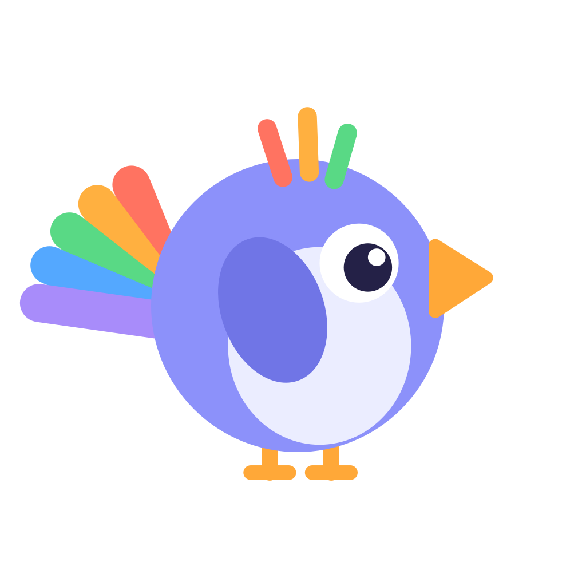
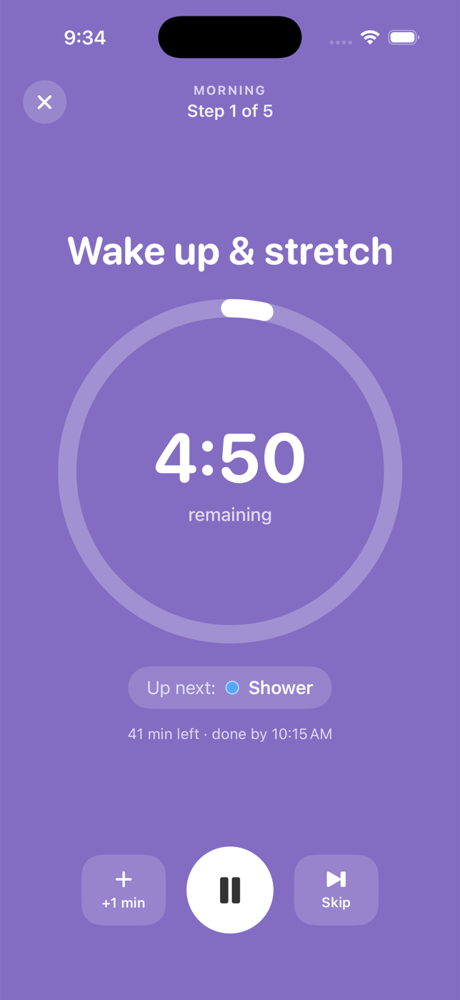

Routines for brains that don't feel time.
Cuebird turns any routine into small, timed, color-coded steps. The whole screen becomes the color of what you're doing, real alarms get you started, a friendly voice can talk you through it, and it learns how long your morning actually takes. Built for neurodivergent adults.
Download on the App Store · $0.99Each step fills the screen with its color. Glanceable from across the room, no reading required.
Rings through silent mode and starts the routine for you. Starting is the hardest part.
"Next: Shower, 10 minutes." Spoken steps and a 30-second heads-up. Or a chime, or silence. Your call.
Skip, pause, +1 min. Every finish counts, and your streak forgives an off day.

Built on peer-reviewed research into time perception and habit formation.
One-time purchase. No subscription, no ads, no accounts, no data collection.